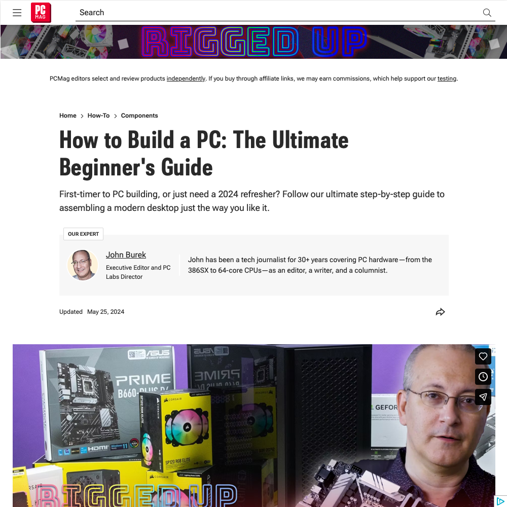

How to Build a PC: The Ultimate Beginner's Guide

The end of Windows 10 signaled a time for me to replace an aging PC in our home. For me, the PC needed to serve a couple purposes: media copier/server, and moderate gaming machine. While I've replaced and upgraded hardware elements over the years, I had never built a computer from scratch. This article helped make it possible. Extra hat-tip of credit to LogicalIncrements.com and PCPartPicker.com for guiding me toward parts, and helping make sharing the part list with friends easier. Last mention is the fabulous Pop Silent case from Fractal Design. I'm totally okay with a large black rectangular prism, if it's quiet - and this is just that - quiet. Too many machines are too loud with all their fans. Not mine. (Too bad it can't all be ARM-based, and Noctua fans.)
- Prior: Megazoid
- Next: The Pen Addict - Top 5 Pens